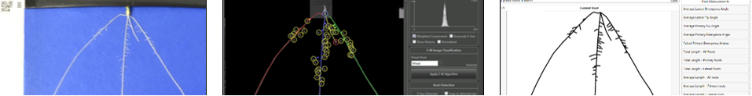

Marcus Griffiths, Ph.D.
Research Fellow
Ph.D. in Plant & Crop sciences
Twitter feed
Tweets by marcusdgriffSoftware
For my research I rely greatly on a wide range of software and image analysis tools developed by computer specialists. Using these greatly increases throughput, accuracy and reproducibility in plant phenotyping. Below I provides links to all of the software I commonly use and how I use them.
Before embarking on any project I strongly recommend checking out plant-image-analysis.org as it is a central resource maintained by @guillaumelobet for available software and datasets.
RootNav
Semi-automatic software for quantification of 2D root systems. Used for processing seedling root images of mapping population grown in hydroponic pouches.
FREE DOWNLOAD

CellSeT
Semi-automatic software for quantifying root anatomy by segmenting out plant cells and assigning cell classes.
FREE DOWNLOAD
RooTrak
3D Root segmentation software for X-ray Micro Computed Tomography (µCT) scanned plants.
FREE DOWNLOAD
RooTh
3D Root skeletonisation and root system quantification software for X-ray Micro Computed Tomography (µCT) scanned plants.
FREE DOWNLOAD
 OpenSimRoot
3D Root simulation software that can integrate X-ray Micro Computed Tomography (µCT) & MRI scanned plants.
FREE DOWNLOAD
Fiji is just imageJ
Fiji is an image processing package, basically imageJ bundled with a lot of plugins which facilitate scientific image analysis. I personally use it to batch transform images (eg. crop, colour threshold) using the macro feature. There are many applications including measuring, skeletonisation and adding scale bars to images.
See My Code for my Fiji macro code repository.
FREE DOWNLOAD
OpenSimRoot
3D Root simulation software that can integrate X-ray Micro Computed Tomography (µCT) & MRI scanned plants.
FREE DOWNLOAD
Fiji is just imageJ
Fiji is an image processing package, basically imageJ bundled with a lot of plugins which facilitate scientific image analysis. I personally use it to batch transform images (eg. crop, colour threshold) using the macro feature. There are many applications including measuring, skeletonisation and adding scale bars to images.
See My Code for my Fiji macro code repository.
FREE DOWNLOAD
 RStudio
Statistics program for data processing and graphing. RStudio makes R easier to use. Notable packages inlcude "tidyverse" and "qtl".
See My Code for my R code repository.
FREE DOWNLOAD
RStudio
Statistics program for data processing and graphing. RStudio makes R easier to use. Notable packages inlcude "tidyverse" and "qtl".
See My Code for my R code repository.
FREE DOWNLOAD